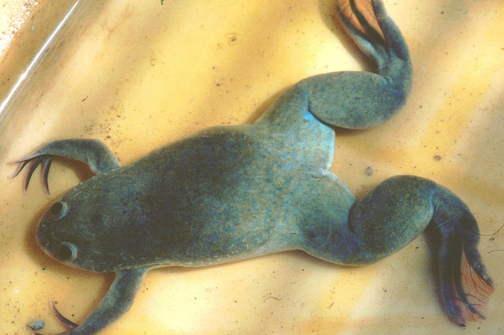

African Clawed Frog Feeding: Why an Aquatic Frog Eats Past the Point of Floating
Xenopus will take food every time food appears, which is an asset in a laboratory and a hazard in a tank. The limit is nitrogen, not appetite.

An adult Xenopus laevis can pass 1-2 mg of ammonia per gram of body mass a day, and in a 40-litre tank with a single sponge filter that figure turns lethal inside four days. The ration and the water chemistry are the same husbandry decision wearing two hats. Every gram of protein you drop in becomes oxygen demand, urea and ammonia at the gill, and the frog can only excrete what its kidney and skin can move at the pH you have given it.
The same frog is also the only common pet amphibian that swims at the top of the water column by choice rather than by illness. Buoyancy in Xenopus is a lung-and-gut problem, not a swim-bladder one; a frog that floats nose-up with its hind legs dangling is telling you something about gas in the gut and the ration that put it there.
The evening the tank smelled wrong
I fed four subadult clawed frogs at 20:40 one Thursday, three cubes of frozen bloodworm and a pinch of pellet, which by my own written sheet was a normal evening. At 06:15 the water had a faint sweetish smell, the sort that precedes a crash, and one female was hanging at the surface with her cloaca at 45 degrees, hind legs limp. Ammonia 2 ppm. I had changed 25 % two days earlier and cleaned the filter sponge, which is the mistake. Wiping the sponge in tap water had knocked back the nitrifying bacteria and the frogs had been feeding the same colony that was no longer there. I did a 50 % change, dropped the pH test first, and fed nothing for 72 hours. She was upright by Sunday. The lesson cost me one filter colony and a near-miss on four animals.
Ration by weight, not by scoop
The single figure I would defend in public is 1-2 % of body mass per feed for an adult, three feeds a week. A 100 g adult clawed frog gets 1-2 g of food per feeding, which is roughly 6-8 bloodworm cubes or 8-10 3 mm sinking pellets. Subadults under 50 g do better on 2-3 % per feed at four feeds a week because they are laying down tissue, not maintaining it. Juveniles of 10-15 g can take small feeds daily, but a single feed should not exceed 3 % of their body mass or the gut fills with gas and they list to one side.
Weigh the animal, not the food, on a 0.1 g scale once a fortnight. That is the only routine measurement that tells you whether the ration is right for that individual.
The 1-2 % rule is husbandry consensus in the amphibian-medicine literature, not a trial result — I have never seen a controlled study of clawed frog ration in the way there is for laboratory rodents. What I would say with certainty is that the failure mode of overfeeding is not obesity in this species. It is ammonia.
The ammonia chain, and why overfeeding hits it twice
Protein is deaminated in the liver, the nitrogen arrives at the kidney as ammonia, and Xenopus excretes most of it across the skin and gills as unionised NH₃. Unionised ammonia is the toxic form; the proportion that is unionised rises steeply as pH climbs past 7.4 and as temperature climbs past 24 °C. That is the whole mechanism: warm, alkaline water turns the same total ammonia load into a much larger share of the toxic fraction, and the frog is sitting in it.
The second hit is bacterial. Every uneaten pellet and every gram of faeces is oxidised by heterotrophic bacteria into ammonia, so a feed you thought was 1 g of food becomes 1 g of food plus the oxygen consumption of the bacteria digesting it. In a 40-litre tank with a single air-driven sponge filter the oxygen budget is thin. Ammonia spikes to 0.5-1 ppm within 24 hours of a heavy feed, and the frog's first response is to stop eating, which the keeper reads as "not hungry" and feeds again.
Ammonia toxicity in this species shows as skin sloughing, reddening at the toes, a frog that floats in a corner with its legs spread and does not right itself, and eventually tremors. If you see any of that, the ration question is over and the water change question has begun.
Buoyancy: what a float actually means
Clawed frogs hold air in the lungs and, if the diet is too rich in dry pellets, in the gut. A healthy adult is neutrally buoyant and hangs mid-water with the head slightly up. A frog that will not sink is a frog with excess gas somewhere, and the differential is short:
| Symptom | Most likely cause | What to do first |
|---|---|---|
| Floats nose-up, hind legs dangle, still eating | Gas in gut from dry pellet ration | Fast 48 h, switch two of three feeds to bloodworm, re-check at 24 h |
| Floats flat on the surface, will not dive, skin sloughing | Ammonia or nitrite burn at the gill | Test ammonia; 50 % water change; no feed for 72 h |
| Floats high with bloated abdomen, no feeding response | Bacterial infection or oedema, not ration | Vet; do not fast alone, the frog needs fluid balance assessed |
| Sits on the bottom leaning to one side | Gut impaction or neurological sign | Vet; note water chemistry before the appointment |
The line that matters is between a frog that floats because it is full and one that floats because it is sick. Feeding response separates them. A full frog is ravenous the next evening; a sick frog refuses. If you cannot get a feeding response after a 48-hour fast, stop treating the ration as the problem.
Enclosure as part of the ration
Water volume is the buffer against your own overfeeding. A 20-litre tank holds roughly a five-day ammonia budget for a 100 g frog; a 100-litre tank holds three weeks of the same feed. If you keep clawed frogs in anything under 40 litres, your ration has to be tighter than the numbers above, because you have less margin. I no longer stock this species below 60 litres for an adult pair, and that is a decision I made after the Thursday evening above, not before it.
Two filters are better than one big one here. If a single sponge clogs, the whole colony goes anoxic in the same tank and the ammonia goes up overnight. Two smaller sponges give you redundancy and let you clean one at a time. Clean filter media in tank water, never in tap, and never in the same week as a big water change.
Raising the young, slowing the old
Juveniles in the 10-15 g range need 3 % of body mass daily, split into two feeds morning and evening, and they will eat bloodworm, daphnia and crushed pellet. They cannot tolerate the same ammonia load per gram that adults can, because their gill surface is proportionally larger and their tolerance of the unionised fraction is lower. That means more, smaller feeds, and a water change every two days in a bare-bottom ten-litre tub. The husbandry priority in the first three months is water, not food.
Adults at 100 g and above can be fed two or three times a week and will hold condition on 1 % of body mass per feed if the water is warm. At 22-24 °C a meal clears the gut in 24-36 hours; drop the temperature to 18 °C and that stretches to three days, which is why winter ration in an unheated room has to fall. This species does not brumate in captivity, but it does slow, and a keeper who does not slow with it will be feeding into a gut that has stopped moving.
Morphs do not change the ration. Albino and leucistic lines eat and excrete exactly the same as wild-type; the only husbandry difference I have noticed is that albinos seem slightly easier to spook under a white light, which is a handling point, not a feeding one.
The quiet recommendation
Keep a written log of what you fed, when, and the ammonia reading two mornings later. That log is worth more than any calculator, because it will show you the point at which your tank stops keeping up with your ration. In my experience that point arrives well before the frog looks ill, and if it does arrive with an animal that has stopped eating and is losing condition, the convalescence short-term diet is the one thing that has ever bought me a weekend before a vet appointment.
The final number I would give a keeper: hold the ration at 1-2 % of body mass, three feeds a week, keep total ammonia below 0.25 ppm, and test at 24 hours after every feed for the first month. If you can hold those three, the frog will keep itself upright and eat what you put in front of it for a decade.
Frequently asked questions
How much should I feed a 100 g adult African clawed frog?
1-2 g of food per feed, three times a week, weighed rather than scooped. That is roughly six to eight bloodworm cubes or eight to ten sinking pellets. Feed in the evening, remove uneaten food after an hour, and test ammonia the next morning until you know your filter is keeping up.
Is it normal for my clawed frog to float after eating?
A short float after a pellet-heavy meal is common and resolves within 24-48 hours on a fast. Floating that persists, or that comes with a refusal to eat, reddening skin or sloughing, is a water chemistry problem first and a vet problem second. Check ammonia and nitrite before you change the ration.
Do clawed frogs need feeding every day?
Adults do not. Three feeds a week at 1-2 % of body mass keeps condition in a warm tank. Juveniles under 15 g are the exception and want small daily feeds at around 3 % of body mass while they are growing. Daily feeding of adults is the commonest cause of the ammonia spikes I see.
What we actually use
Two pieces of equipment that do most of the work in a African Clawed Frog setup. Nothing here is here because a brand asked.
-
Check price on AmazonFeeding
Digital Kitchen Scale, 0.1 g
Ration by body weight, not by how fast the frog takes it — the feeding response never stops, so it cannot be the signal.
Typical price $18–30 -
Check price on AmazonDisease & Health
Vetark Critical Care Formula
A frog that has stopped eating is usually a water-quality problem; support feeding buys days while the tank is corrected.
Typical price $19–29
Links open Amazon in a new tab. We do not set or track prices.
Affiliate disclosure. As an Amazon Associate, we earn from qualifying purchases. Every card in this guide is an affiliate link — it costs you nothing, and we only list gear we have run in our own enclosures.